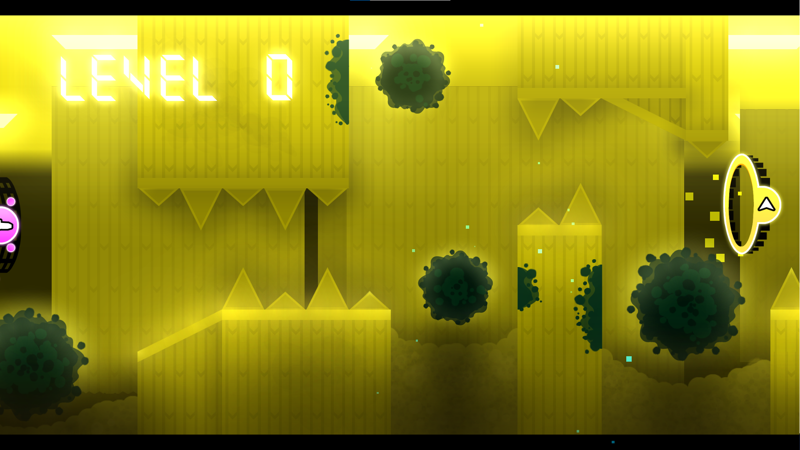
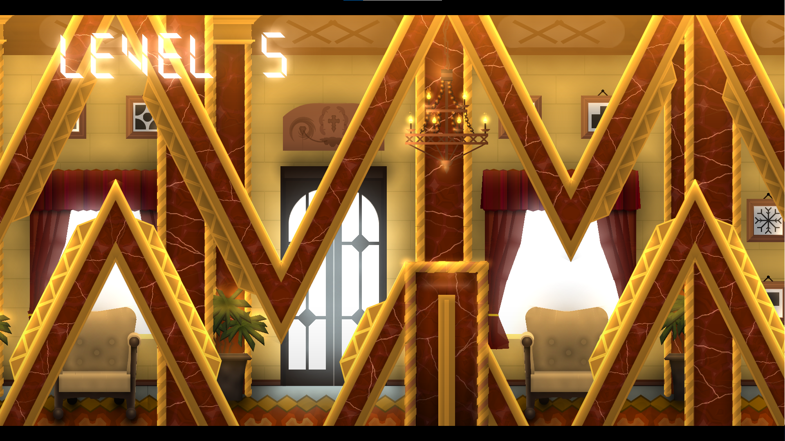
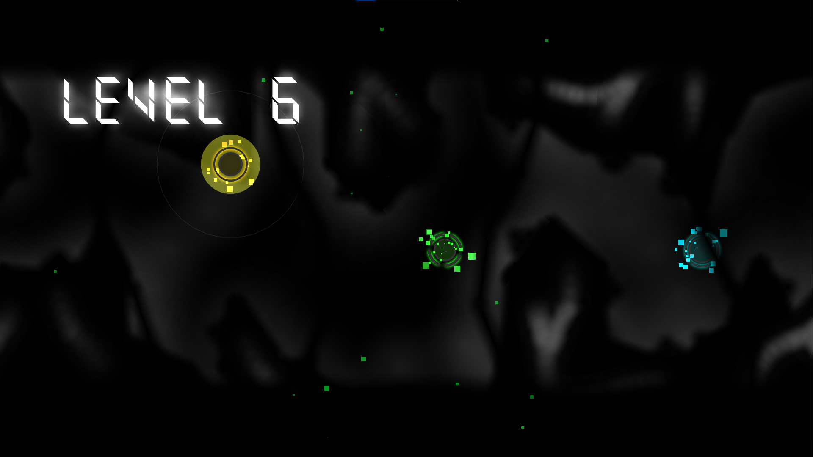
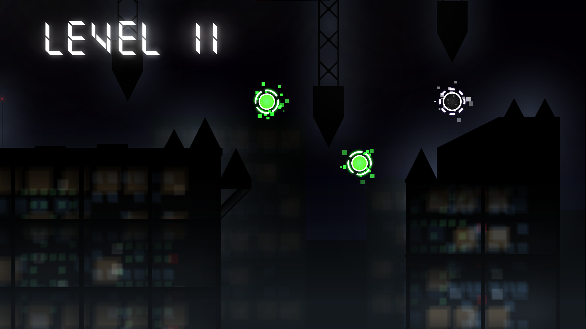

As I've gotten better at creating, there's many projects I've made, some of them good, and some not so much. In this page I'll go over the better ones.
Backrooms
My Thoughts
Backrooms is a featured level that I made in 9 months. While I do think that it should have been epic, the fact that it's only featured does not seem to be affecting its popularity much. I streamed a lot of its creation online, and it was really fun to do so. Streaming it to friends helped me stay motivated to keep working on it, and they also gave me valuable feedback. I started building the level during the summer of 2022, and released it in 2023. It has around 128,000 objects, and is 1 minute and 35 seconds long.
Level Description
The level begins with a fade in to Level 0: "The Tutorial" of the backrooms, and the part lasts somewhere around 15-20 seconds. Next, it transitions into a spider part which takes place in Level 1: "Habitable Zone". After this, there is a short wave section for Level 2: "Abandoned Utility Halls" followed by a transition that uses Level 6: "Lights Out" as an excuse for lazily fading the screen to black and into the next level. Up next is a ship part for Level 3: "Electrical Station" where a skinwalker entity can be seen in the background, behind a gate to a dark hallway. To the left of the gate, and malfunctioning electrical box, you can see the bench from Hollow Knight, which one of my friends begged me to add as an easter egg. Level 4: "Abandoned Office" is a wave part with (intentionally) awkward gaps near the end. However, in the middle of the part, there is a glitching block. If you go down into it, you will be teleported to Level !: "Run For Your Life" if you would like to take the coin route. Followed by this is Level 5: "Terror Hotel" which is in my opinion, the best decorated part of the level. The downside to this is that it's the most object heavy part in the level, sitting at around 15k objects in the 5 seconds the part is on screen. In the background, there is a picture with a snowflake on it, which is a reference to the creator Bli. Then, A dark pillar moves across the screen and reveals the you falling sideways out of the house in Level 7: "Thalassophobia". You're sent again to Level 6: "Lights Out", but this time there are veiny white lines on the structures pulsating. After holding a dash orb, a collection of levels are flashed onto the screen. The numbers of the levels are shown right in the middle of the screen as well. After this sequence, there is a cube part that takes place in Level 37: "Sublimity". The screen goes dark for a second, then reveals you at the rooftops of the buildings in Level 11: "The Endless City". The level switches back to level 6 for a few seconds, then transitions into the longest part of the level, which is Level 8: "Cave Systems". Finally, after a click with a 6 frame window to survive, you're sent to The Void, and the credits play. The credits start off with stating who made the level (me and a friend, but mostly me), and then goes into some dedications.
   Some of the major dedications include:
- JamAttack
- Bli
- Blueskii
- Nexus
- Viprin
- Wulzy
- Tride
- YoReid
How well the level performed
The day after I released the level, a youtuber known for showcasing levels released a video showcasing my level. I have no clue how he found it so fast with the hundreds of levels being posted per day, but he did it anyway. As of writing this, the level has around 150k downloads, and is by far my most popular level. I plan to make a sequel some day.